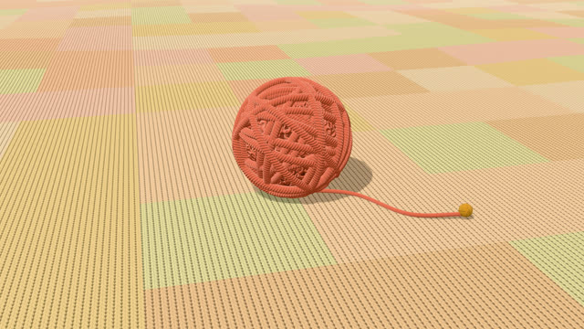
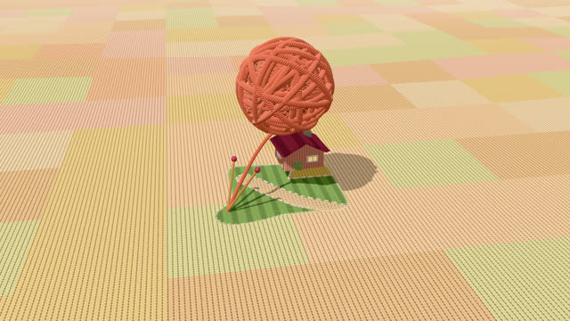
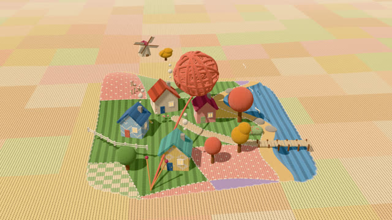
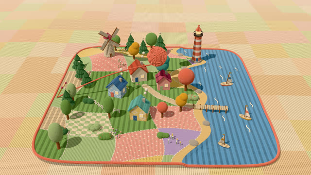
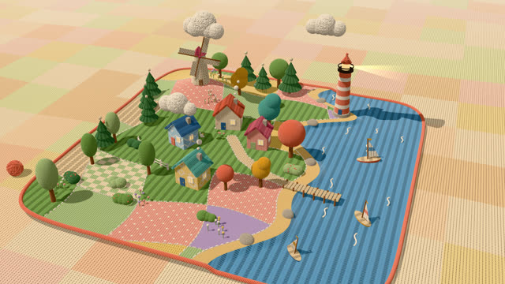
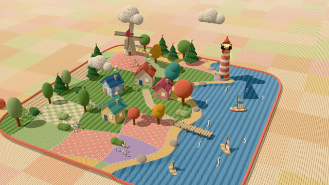
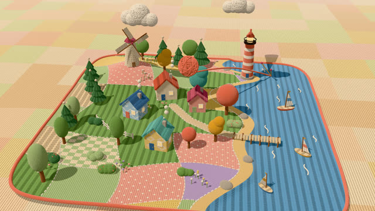
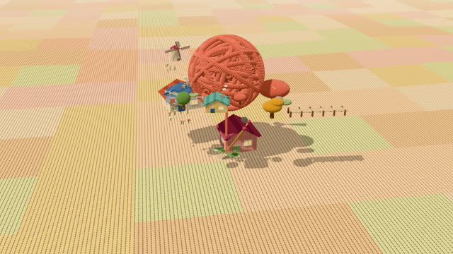
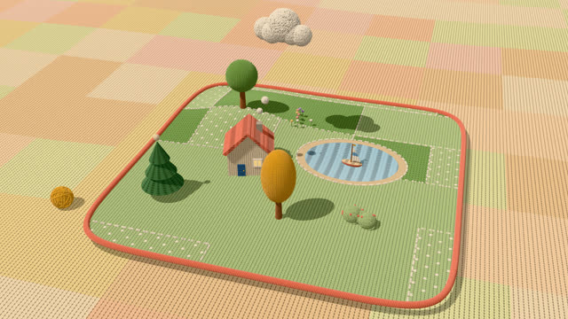

작업 흐름
- 입력
- 세상의 주제(항구, 농장, 눈 마을 …), 강조색 하나, 소품 목록, 공 · 뜨기 · 풀기의 박자
- 장면
- 높이 함수와 구역 함수로 짓는 뜨개 땅(구역 경계마다 홈질 솔기), 메리야스 · 고무뜨기 · 가터 · 멍석 · 꽈배기 질감, 털 셸을 입힌 나무와 구름, 앞선이 닿으면 공에서 튀어나오는 소품
- 확인
- 절반 크기 스틸과 콘택트 시트, 같은 시각 같은 픽셀 · 루프 이음매(마지막 프레임 = 첫 프레임) · 장면 규칙(등대는 땅 위)을 모든 프레임에서 보는 검사
- 출력
- 30fps 1920×1080 MP4(사운드 선택), 끌어서 실을 당기듯 앞뒤로 감아 보는 라이브 페이지
cd knit-diorama/examples/harbour
node ../../scripts/render.mjs index.html --sheet 16 --scale .5
node ../../scripts/check.mjs index.html
node ../../scripts/render.mjs index.html --workers 4
node ../../scripts/new-scene.mjs ../../../my-world요구 사항: Node + Playwright Chromium(WebGL2), ffmpeg. 네트워크가 필요 없습니다. GPU가 없으면 1080p 한 프레임에 3–7초가 걸려 20초 영상을 백그라운드로 40–60분에 렌더합니다. 단계별 순서는 SKILL.md에 있습니다.
샘플
예제 「Knitted Harbour」의 박자마다 한 장면과 시작 템플릿입니다. 카드를 누르면 새 탭에서 그 장면이 그 순간에 멈춘 채 열리고, 브라우저가 직접 그립니다.
Knitted Harbour 16:9 · 20초 루프
담요 위의 털실 공에서 항구 섬 하나가 떠져 나오고, 배가 떠다니다가 다시 풀려 공으로 돌아갑니다.

시작 · 0.8초털실 공 하나
실 가닥을 감은 공과 담요 위에 늘어진 실 끝. 곧 이 끝이 가운데로 당겨짐

뜨기 · 3.4초첫 조각
떠오른 공이 돌며 가운데부터 뜸. 앞선을 따라 도는 뜨개바늘, 공에서 날아와 찌그러졌다 펴지는 집

뜨기 · 5.6초앞선과 바늘
크림색 테두리로 보이는 앞선. 공에서 바늘까지 이어진 실, 솔기로 이어진 밭 조각들

뜨기 · 8.4초가장자리까지
뜬 만큼 작아진 공. 마지막으로 산호색 끈 테두리와 고무뜨기 옆면이 드러남

완성 · 12초뜨개 항구
줄무늬 등대의 불빛, 도는 풍차 날개, 굴뚝 연기, 흔들리는 배. 담요 위에 내려앉은 작은 공

완성 · 13.2초반 바퀴 돌기
카메라가 천천히 돌며 보는 섬. 털이 보송한 나무 수관과 구름, 무늬를 떠 넣은 집 벽

풀기 · 16.6초다시 풀리는 섬
바깥부터 줄어드는 앞선. 소품이 한 번 움찔한 뒤 공으로 날아 들어가고 공은 다시 커짐

풀기 · 18.2초공으로 돌아감
마지막 집들이 공으로. 20초에 첫 프레임과 같은 모습으로 이어지는 루프

템플릿 · 12초시작 장면templates/scene.html
new-scene.mjs가 복사하는 출발점. 연못이 있는 초원, 집 한 채, 나무 몇 그루실제 작품
이 레포에서 만든 스킬입니다. Kris Yang의 인터랙티브 작품 Yarn World("실을 당기면 세상이 떠지고, 풀린 끝을 당기면 풀린다")에서 생각과 일반적인 기법(뜨개 질감 노멀 맵, 털 셸, 드러나는 앞선, 스프링 팝업)만 빌려 예제 「Knitted Harbour」를 만들었고, 코드와 소품, 장면 구성, 타이밍은 모두 이 레포의 것입니다.
링크
- SKILL.md 워크플로
- 폴더 lib · scripts · templates · references · examples
- README.md 빠른 시작
- references/LOOK.md 털실로 보이게 하는 것, 뜨개 질감, 크기, 팔레트, 빛, 움직임
- references/KIT.md 엔진과 소품 API, 새 소품 만들기
- references/LESSONS.md 겪은 문제와 해결